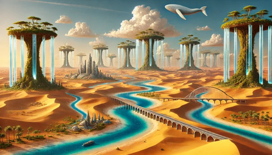
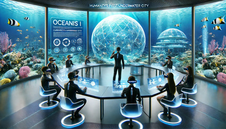
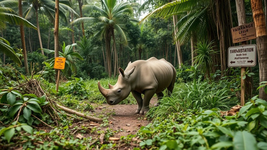

Snipets: Relatos y Cuentos
Una noche en el museo
Viaje por Gran Canaria
Cuentos de ciencia ficción
Cuentos de navidad
Celebraciones
Leyendo a Galdós
Un día en la vida de un niño de 11 años
Un viaje por África
Viaje al Polo Norte
Relatos sobre el Universo
Viaje en avión
Viaje por Europa (Interrail)
Civilizaciones antiguas
Relatos del Siglo de Oro español
Relatos mitológicos
Conflictos internacionales
Durmiendo en la calle
Juegos antiguos
Músicos clásicos
Escritores contemporáneos
Qué quiero ser de mayor
Sala de espera
Viaje en crucero
El mar de las emociones
Hábitos saludables
Cuentos clásicos
Viaje por España
Experiencias cercanas a la muerte
Viaje por Latioamérica

Relatos de terraformación

Relatos sobre ciudades submarinas
Historias de mis abuelos

Especies en peligro de extinción
Las aventuras de Zokete
Relatos STEAM